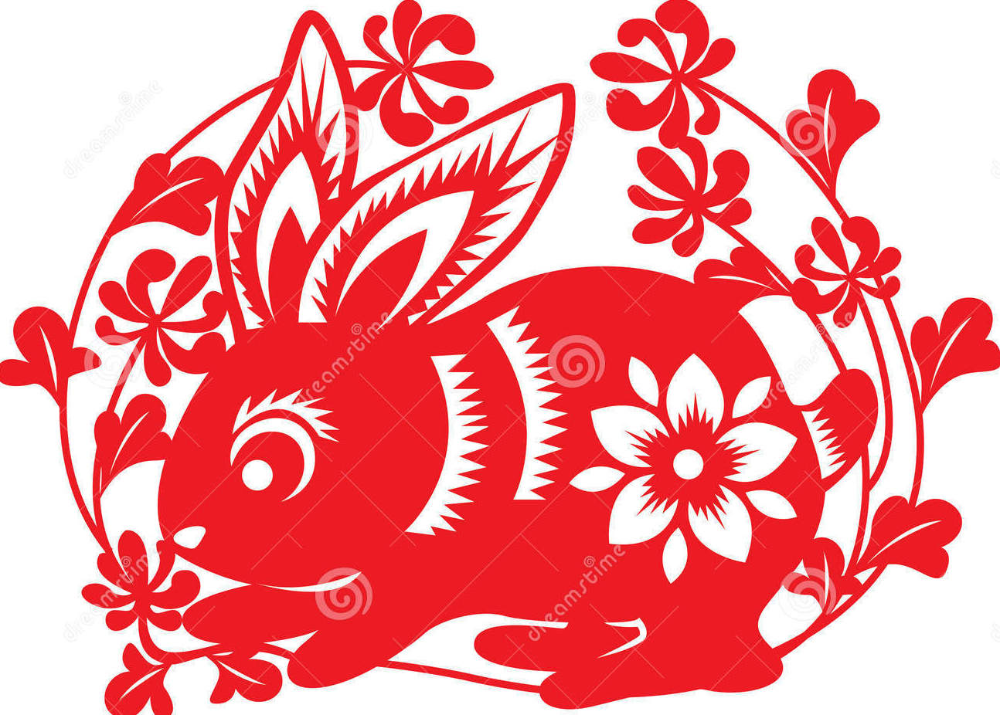

Rabbit
The Rabbit's Personality:
Rabbits tend to be gentle, quiet, elegant, and alert; quick, skillful, kind, and patient; and particularly responsible. However, they might be superficial, stubborn, melancholy, and overly-discreet. Generally speaking, people who belong to the Rabbit zodiac sign have likable characters. Gentlemen who belong to the rabbit zodiac sign always treat people politely, with a gentle smile that makes people feel that they are credible and sincere. When meeting trouble, Rabbits can handle it in an orderly way; when encountering tough difficulties they are never discouraged, but are persistent to seek solutions. So they eventually achieve enviable success. Ladies belonging to the rabbit zodiac sign, apart from a pretty and demure appearance, have a pure heart. Rabbits are faithful to those around them, but reluctant to reveal their minds to others, and have a tendency to escape reality. They are too cautious and conservative, which means they miss good opportunities.
The Best Careers for Rabbits
Good-hearted Rabbits are loved by others. Intellectual, scholarly and learned, Rabbits can enjoy a good career as well as wealth. But Rabbits should take care not to give up half way when striving for something. With a pair of dexterous hands, Rabbits have a gift for calligraphy and painting, as well as tailoring and cooking. Owning a patient temperament, they are able to manage everything to people's wishes.
The best careers for Rabbits are cultivation, breeding, education, religion, health care, medicine, culture, police/judiciary work, and politics.
The Luckiest Things for Rabbits
- Lucky numbers: 3, 4, 6, and numbers containing them (like 34 and 46)
- Lucky days: the 26th, 27th and 29th of every Chinese lunar month
- Lucky colors: red, pink, purple, blue
- Lucky flowers: plantain lily, and jasmine
- Lucky direction: east, south and northwest
- Lucky months: the 1st, 4th, 8th, and 11th Chinese lunar months


Source: chinahighlights.com